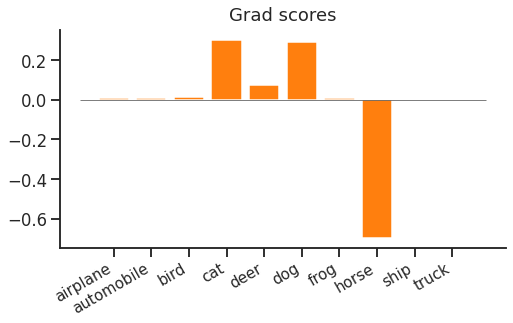
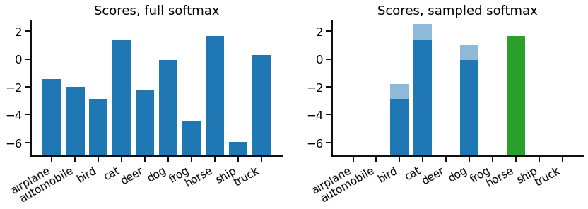
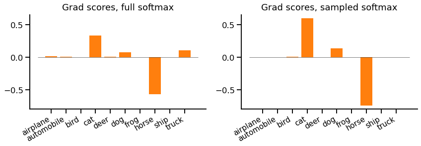

Sampled Softmax is a drop-in replacement for softmax cross entropy which improves scalability e.g. when there are millions of classes. It is very similar to Noise Contrastive Estimation (NCE) and Negative Sampling, both of which are popular in natural language processing, where the vocabulary size can be very large.
In this article, we'll think through the core idea of the sampled softmax loss function, see how to implement it in PyTorch and finally look at what happens when we use this loss. This is part of our series on training objectives, and if you're not familiar with softmax cross entropy, our introduction to that would be a useful pre-read.
When we looked at softmax cross entropy loss gradient updates, we saw both a narrow "spike" and a wider "forest". The spike is a strong negative gradient for the correct label e.g. "horse". The forest contains positive gradients for all other classes. We observed that the spike and the forest contain the same probability mass, but whereas the spike is concentrated on a single class, the forest is spread out over $N\!-\!1$ classes.
It looked like this:

This looks fine for 10 classes, but if we have over 100,000, it suddenly looks quite inefficient. We end up making 1 large increasing (negative gradient) update to the correct class, and 99,999 small decreasing (positive gradient) updates to all other classes. Ideally we wouldn't have to compute scores or gradients for all of the incorrect classes for each and every update.
Sampled softmax, NCE and negative sampling are related sampling-based solutions to this problem. Instead of always using every negative class, the idea is to sample a smaller set of negative classes. With a slight adjustment to the loss function, this gives a biased but usable estimator of the gradient we would have obtained using plain softmax cross entropy.
The benefit of this is that the unused classes require no computation at all, as they can be ignored in both forward and backward passes. So if we have 100,000 classes but only draw 100 negative samples, we only need to compute 101 scores (100 negative samples, 1 positive target) & backpropagate 101 gradients.
Let's look at the equation. First, to recap softmax cross entropy:
\begin{equation*} L(x, t) = -x_t + \log \sum_i \!e^{x_i} \end{equation*}
Where $x$ is the predicted distribution from the model, and $t$ is the target label. If we wanted to estimate the sum using samples, our first attempt might be:
\begin{equation*} L(x, t) = -x_t + \log \sum_{\tilde{c} \sim q_c} e^{x_{\tilde{c}}} \,/ (k\, q_{\tilde{c}}) \end{equation*}
Here $q$ is a fixed vector of probabilities for each class, and $\tilde{c}$ are the negative samples (drawn $k$ times). This is importance sampling. Briefly, this means: sampling $\tilde{c}$ from any distribution $q$ that we choose, then dividing out the bias caused by $q$, to estimate the log-sum-exp.
This is OK, but we can do better. We can lower the variance of this log-sum-exp estimation by separating out the target label from the rest of the distribution. Now we'll always use the target label in the log-sum-exp, and exclude it from sampling. This is useful because we have to compute the target score anyway, and if our model is any good it will often have high score, making it a useful "sample" for our estimator.
With this tweak (and a slight rearrangement of terms into the exp), our sampled softmax looks like this:
\begin{equation} L(x, t) = -x_t + \log \left[ e^{x_t} + \sum_{\tilde{c} \sim q_c | c \ne t} e^{x_{\tilde{c}} - \log (k\, q_{\tilde{c}} / (1 - q_t))} \right] \label{eqn:loss} \end{equation}
This still looks quite like a plain softmax cross-entropy loss. The key difference is that the sum is over the target and a fixed number of samples, rather than every class. The only other difference is an adjustment of class scores given to the softmax normaliser ($x' = x - \log (k\, q_{\tilde{c}} / (1 - q_t))$). We'll see what this adjustment does when we look at the gradients later.
It's slightly fiddly to implement sampled softmax. To get the most out of it, we need to avoid computing scores for classes that aren't needed by the loss. Recall that loss only needs the predicted score for the target and a fixed number of negative samples. This means that the implementation depends on the final layer of the model.
In this example, our model ends with a linear projection up to output classes, which is quite common. So our model's core returns a "predicted embedding" vector of size embedding_size for each input in a batch. We then use an "unembedding" projection of the predicted embedding up to size num_classes to get the score. I.e.
\begin{equation*} x_i = \sum_j P_{ij} e_j \end{equation*}
If we were using full softmax cross entropy, we would compute all scores with a full matrix multiplication. With sampled softmax we can save computation and memory by selecting only the rows of $P$ that are needed for the loss.
One optional tweak is to share noise samples between elements of the batch. Instead of drawing 100 negative samples independently for each element of a batch, we can draw 100 samples to be used for every example in the batch. This improves compute efficiency without harming gradient estimates too much.
Let's see it in action:
inputs, labels = ...
model = ... # returns (batch_size x embedding_size)
projection = ... # shape (n_classes x embedding_size)
n_samples = ...
batch_size = inputs.shape[0]
n_classes = projection.shape[0]
# 1. Generate predicted embeddings
predicted_embeddings = model(inputs)
# 2. Get target label scores
label_scores = (predicted_embeddings * projection[labels, :]).sum(-1)
# 3. Sample shared noise & get scores
samples = T.randint(high=n_classes, size=(n_samples,))
noise_scores = predicted_embeddings @ projection[samples, :].T
noise_scores += np.log(n_classes - 1)
# 4. Reject samples matching target label & correct for remaining samples
reject_samples = labels[:, np.newaxis] == samples[np.newaxis, :]
noise_scores -= 1e6 * reject_samples
noise_scores -= T.log((n_samples - reject_samples.sum(-1, keepdims=True)).float())
# 5. Apply regular softmax cross entropy
scores = T.cat([label_scores[:, np.newaxis], noise_scores], dim=1)
loss = T.nn.functional.cross_entropy(scores, T.zeros(batch_size, dtype=T.long))
print(float(loss))
loss.backward()Since this is somewhat complex, let's walk through step-by-step:
Generate predicted embeddings: We run our model as usual, but stop before the final projection. In this demo it's a small matrix, but often it's very large, e.g. $10^6 \times\! 256$ for a language model of embedding size 256 and a vocabulary of 1 million words.
Get target label scores: Instead of using a simple dense multiplication to get all scores (simply predicted_embeddings @ projection.T), we only compute scores for the target label & noise samples. Here we use a batched dot product to compute target label scores (note that we only need a score for the associated batch element, labels[0] for predicted_embeddings[0, :], etc.)
Sample shared noise & get scores: In this case, we've chosen a uniform noise distribution over output classes, since our dataset has balanced classes, drawn using T.randint. We use the samples to index rows of projection, and then, since we're sharing noise samples between batch elements, use a full matrix product with the predicted embeddings to compute noise scores for each batch element. The noise scores get an adjustment for the flat sampling distribution (excluding the target), -log(1/(n_classes-1)) == log(n_classes-1).
Reject samples matching target label & correct for remaining samples: We must reject samples matching the target label, so subtract a large value from their score. Then, to correct noise scores ($-\log k$) we count the "actual" $k$ after rejecting matches.
Apply regular softmax cross entropy: The final stage looks slightly odd - we build a full noise & labels scores matrix with the target labels always at index 0 (using T.cat). Then we can use standard softmax cross entropy loss, with the target label fixed at 0.
Let's look at an example. At each point, we'll compare against a full softmax equivalent (for the same example).

On the left, there's the regular full set of scores for a regular softmax, which is the model output for each class. On the right, we have our sampled softmax scores. In this case, we've taken 3 negative samples, which are {bird, cat, dog}. Each sample score has two portions - the portion from the model (dark blue) and a portion from the correction term in our loss equation \eqref{eqn:loss} (light blue).
If we drew more samples, the correction would be decreased, but if we had more classes (so a lower probability of sampling each class) the correction term would increase. This is because the goal of the correction term is to cancel out the sampling procedure, on average. In contrast, the target score for "horse" doesn't have a correction term, as it's always included exactly once.
We won't look at softmax probabilities or loss value for this example, because they're not hugely meaningful. Instead, we'll move straight on to the backward pass.
There isn't anything special about the backward pass when using sampled softmax. As with the forward pass, it's just running on a restricted set of classes - negative samples plus target.
For our example, the gradients look like this:

First, notice that there are only gradients for the target class and noise samples, everything else is zero and does not need to be computed.
Second, we see remaining class gradients are all larger (positive or negative) values. In particular the gradient for "cat" is considerably larger. This is due both to the adjustment and the missing not-sampled classes.
We could now imagine what would happen if we kept repeating this with different samples. We'd get different gradients each time. Sometimes we'd sample "cat" and it would get an extra large update, but sometimes we wouldn't sample it and it would not get an update at all. The compensation in the height of each bar makes the average look similar to the reference full softmax case.
That's sampled softmax. It's a simple idea - we can save memory and computation by randomly sampling a few incorrect labels, rather than computing scores for all labels every single time. The equations weren't too bad, the regular softmax just needed a slight adjustment to balance out the sampling. Perhaps the worst bit was the code, which depends on the final layer of the model to make the most of the computational savings.
I'd probably consider using sampled softmax if I have over 100,000 classes, or if my final classification layer dominates overall execution time or memory use. An obvious application is large word vocabularies, for example in language modelling. However, this has fallen slightly out of favour recently with the rise of subword tokenisation schemes such as byte pair encoding and wordpiece. But it's still a useful tool to have in your box of loss functions.